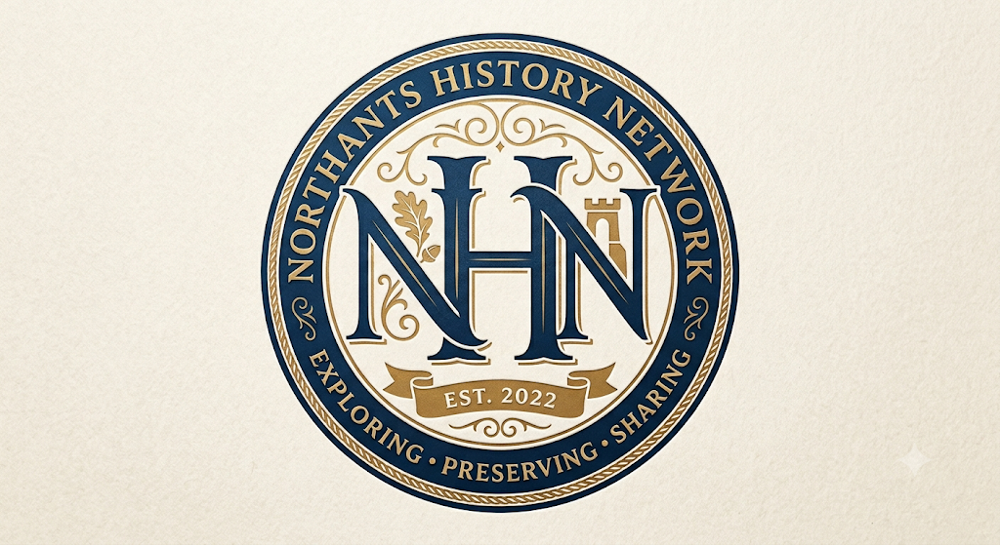

Your gateway to the rich history of Northamptonshire
Whether you're researching your family history, looking for a local history society, planning a visit to one of Northamptonshire's fascinating heritage sites, or simply curious about the people and places that shaped our county, you've come to the right place.